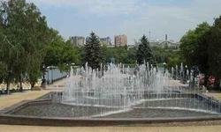

В Донецке можно посетить такие места как...
Цифровой Донецкий планетарий
Цифровой Донецкий планетарий Хотелось ли вам когда-нибудь своими глазами увидеть кольца Сатурна и спутники Юпитера или рассмотреть лунные кратеры во всех подробностях? А может быть, вы надеетесь стать свидетелем реальных космических событий, таких, например, как падение кометы на поверхность Юпитера? А что, если вы мечтаете самостоятельно обнаружить новую комету? Представьте себе, что вы смотрите в телескоп на одну из наших ближайших вселенских соседок - галактику Андромеды. Марс, Сатурн, Венера, Юпитер, Луна - лишь некоторые из многих тысяч объектов, которые можно увидеть в телескоп.
Центральный парк Культуры и отдыха имени Щербакова
Парк имени А.С.Щербакова работает с 1932года. В парке имеются аттракционы, детские площадки, аллеи для пешеходных прогулок и другие места отдыха. Во время реконструкции парка 2006—2008 годов на набережной первого городского пруда установили статую античной девушки с кувшином. В 2007 году в парке был открыт новый фонтан, состоящий из 6 чаш. Каждая чаша имеет свой рисунок струй.В фонтане используется 200 фонарей и 486 насадок для распределения струй. Во время реконструкции 2006—2008годов у входа со стороны улицы Стадионной установили новый фонтан.
Театр кукол
Донецкий областной театр кукол За годы своей деятельности Донецкий областной театр кукол осуществил более 200 новых постановок, более 10 из которых были награждены дипломами престижных фестивалей (данные на начало 2008 года). На представлениях донецких кукольников, которых было показано более 60 тысяч, побывало более 15 млн зрителей.Донецкий академический областной театр кукол — областной академический кукольный театр в городе Донецке, первый в Донбассе и один из первых в стране.Театр расположен в Донецке в приспособленном помещении бывшего кинотеатра по адресу: р.Ильича,18.
Дельфинарий "Немо"
Дельфинарий "Немо" в Донецке был открыт в декабре 2009 года. Он входит в состав известного культурно-оздоровительного и национального комплекса центров “Немо” и является четвертым по счету в Украине. Назван дельфинарий так в честь первого дельфиненка, который родился в Украине под бдительным наблюдением специалистов дельфинария. Находится дельфинарий в одном из самых живописных уголков города – парке Щербакова.Дельфинарий “Немо” в Донецке представляет собой не только сам дельфинарий, но и океанариум. Попав в фойе этого комплекса, посетители могут через специальное окно просто наблюдать за этими прекрасными морскими млекопитающими, а также за экзотическими рыбками, диковинными рептилиями и амфибиями, попавшими сюда из разных уголков нашей планеты. В этом дельфинарии обитают дельфины-афалины черноморские, морские южноамериканские котики и большой патагонский морской лев.
Донецкий национальный академический театр Оперы и балета им. А.Б. Соловьяненко
Театр построен по проекту архитектора Л. Котовского, который стремился достигнуть торжественной монументальности форм, убедительной выразительности и новых планировочных решений. Котовский ставил себе целью достигнуть синтетической монументальной композиции внешнего образа сооружения в духе социалистического реализма. Переработав ренессансовые приемы композиции, построенной на спокойном величии и гармоничных пропорциях объемов, здание театра увенчано барельефами и объемной скульптурой, которые подчеркивают и завершают основной архитектурный замысел. Здание театра было вначале запроектировано для драматических постановок. После постановления о создании музыкального театра понадобилось внесение в процессе строительства ряда корректив в отдельные планировочные решения.
Парк Украинская степь
Парк Украинская степь Парк Украинская степь в Донецке — парк скульптур из крымского известняка, которые были подарены Донецку украинскими и немецкими скульпторами — участниками первого международного симпозиума в Донецке по скульптуре из камня. Скульптуры представляют собой одиночные и групповые композиции людей, зверей, а также скульптуры-абстракции. Общая тематика работ — это славянская мифология и быт. "Парк Украинская степь" находится по адресу: г. Донецк, бульвар Пушкина. На этой странице Вы можете посмотреть контакты (телефон) компании "Украинская степь", оставить свой отзыв, посмотреть карту проезда к улице "г. Донецк, бульвар Пушкина"!
Парк Культуры и отдыха имени Ленинского комсомола
Парк культуры и отдыха имени Ленинского комсомола был возведен в 1956 году, хотя его планирование началось еще в 1952. В первоначальный план вносятся изменения, так как часть территории отводится для застройки. В 1957 году были начаты работы по озеленению . В 1961 году создаётся водохранилище в пойме реки Кальмиус. На берегах этого водохранилища создаются станция проката лодок и пляж. На сегодняшний день в парке расположены детская железная дорога имени Приклонского, дворец молодёжи и спорта «Юность», выставочный комплекс «ЭкспоДонбасс», монумент «Освободителям Донбасса», памятник погибшим воинам-афганцам, аттракционы, «поляна сказок», стадион Донбасс Арена.
Парк Донбасс Арена
Одной из отличительных особенностей «Донбасс Арены» является ее расположение в центральной части города и наличие вокруг стадиона большой парковой зоны в 25 гектар. Эта территория является крупнейшим рекреационным центром, открытым для жителей и гостей города ежедневно. В основе философии создания парка «Донбасс Арены» – концепция «Донецкий бриллиант», согласно которой парк должен служить своеобразной оправой для стадиона-бриллианта. Проектировщики парка – специалисты известной немецкой компания FAGUS – выбирали виды растений и места их высадки таким образом, чтобы осенью территория вокруг арены была окрашена в цвета, максимально напоминающие клубные цвета «Шахтера». Общее количество растений в парке превышает 77 000, почти половина из них – розы. Все деревья были специально привезены из старейших питомников Германии Lappen и Lorberg.
Донецкий Аквариум
Городской Аквариум в Донецке был основан 7 марта 1991 году и располагается в Ворошиловском районе, недалеко от площади имени Ленина. В каждом аквариуме или террариуме поддерживаются условия существования, соответствующие биотопу отдельно взятой аквазоны (река Амазонка, озёра Малави в Африке и многое другое). Несомненно, это способствует поддержанию на должном природном уровне всех биохимических процессов, которые необходимы для полноценного развития и жизни рептилий и рыб. В аквариуме работает целая группа специалистов, научных сотрудников, которые занимаются изучением жизни и поведения этих животных в искусственных условиях и проецируют их на животных, обитающих в естественных условиях. Таким образом, Аквариум в Донецке - это не просто место демонстрации удивительной коллекции рыб, земноводных и пресмыкающихся, но еще и крупный научный центр.